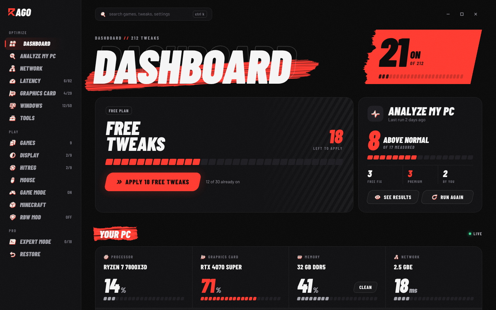

priority
esc
Priority optimization
Latency
Per-game advanced priority
Latency
Graphics thread priority
Latency
Win32 priority separation
Latency
System clock priority (IRQ8)
Latency
DNS resolution priority
Network
Input driver priority
Latency
I/O priority
Expert mode